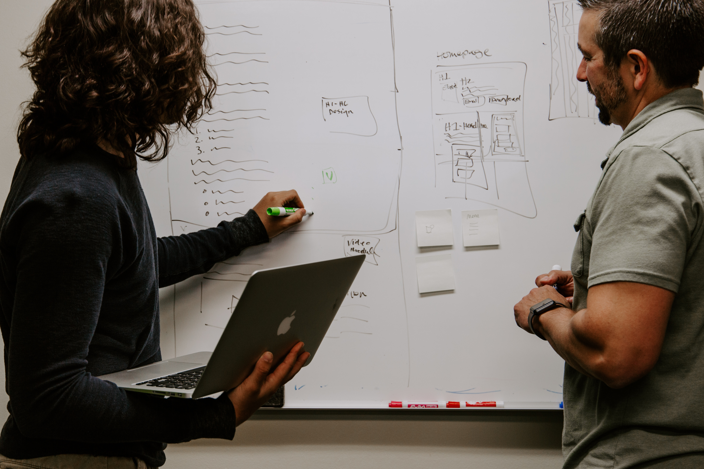
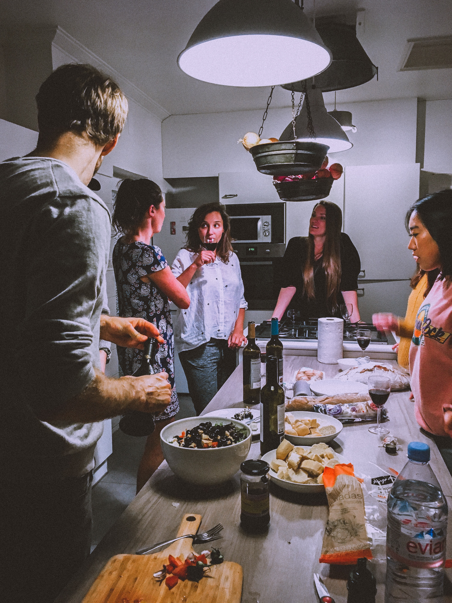

title: Jak zdobyć doświadczenie w branży IT? class: animation-fade layout: true --- class: wrapper, center, middle # {{title}} --- class: wrapper, center, middle # Piotr Gaczkowski  [https://github.com/DoomHammer](https://github.com/DoomHammer) [https://doomhammer.info](https://doomhammer.info) [https://twitter.com/doomhammerng](@doomhammerng) <hr/> [https://doomhammer.info/talks/tp2019](https://doomhammer.info/talks/tp2019) --- class: wrapper, center, middle # Problem doświadczenia --- class: wrapper background-image: url(chicken_egg.jpg) background-size: 90% 90% --- class: wrapper, center, middle # Dzień z życia programisty --- class: wrapper background-image: url(coder.jpg) background-size: 90% 90% --- class: wrapper background-image: url(problemsolving.jpg) background-size: 90% 90% --- class: wrapper background-image: url(client.jpg) background-size: 90% 90% --- class: wrapper background-image: url(taskmanagement.jpg) background-size: 90% 90% --- class: wrapper background-image: url(coder.jpg) background-size: 90% 90% --- class: wrapper background-image: url(testing.jpg) background-size: 90% 90% --- class: wrapper background-image: url(deployment.jpg) background-size: 90% 90% --- class: wrapper, center, middle # Czym jest doświadczenie w IT? --- class: wrapper, center, middle ## Rozwiązywanie problemów  --- class: wrapper, center, middle ## Praca w zespole <img src="teamwork.jpg" style="height: 400px"/> --- class: wrapper, center, middle ## Zarządzanie własnym czasem <img src="timemanagement.jpg" style="height: 400px"/> --- class: wrapper, center, middle ## Znajomość technologii <img src="technology.jpg" style="height: 400px"/> --- class: wrapper, center, middle # Jak zdobyć doświadczenie? --- class: wrapper, center, middle ## Praktyki i staże --- class: wrapper, center, middle ## Projekty i społeczność Open Source  --- class: wrapper, center, middle ## Warsztaty i hackathony <img src="workshop.jpg" style="height: 400px"/> --- class: wrapper, center, middle # Dziękuję!  ### [https://github.com/DoomHammer](https://github.com/DoomHammer) ### [https://doomhammer.info](https://doomhammer.info)